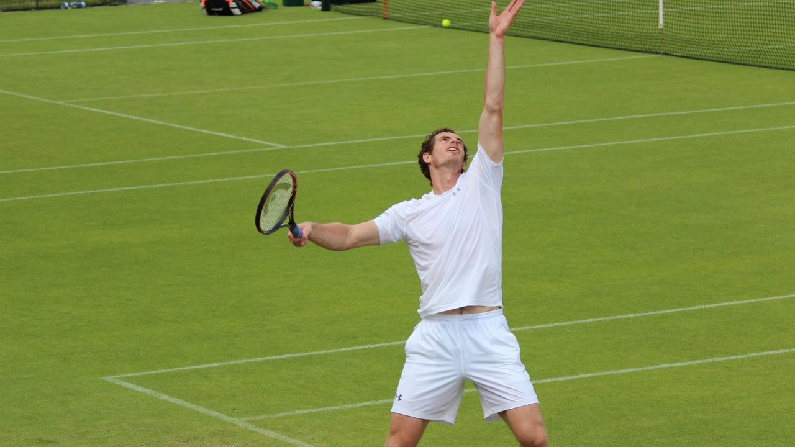
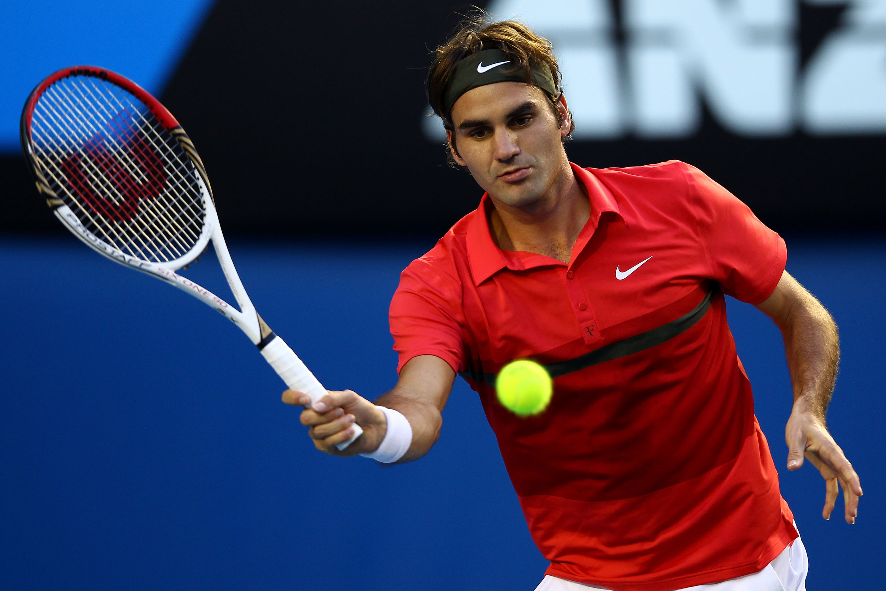
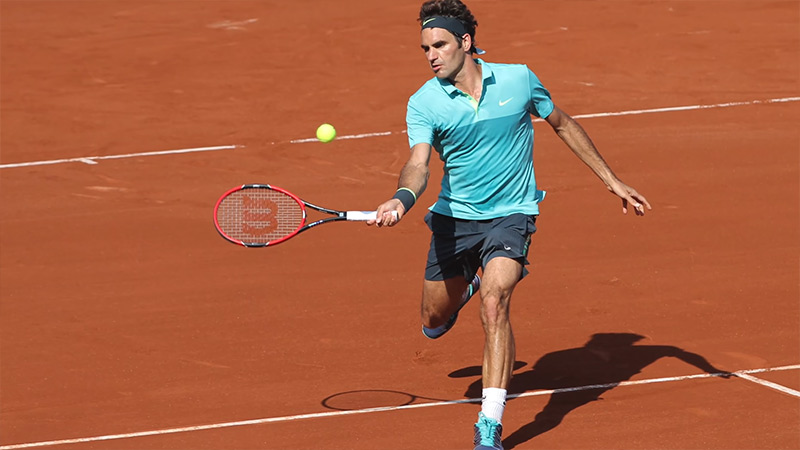
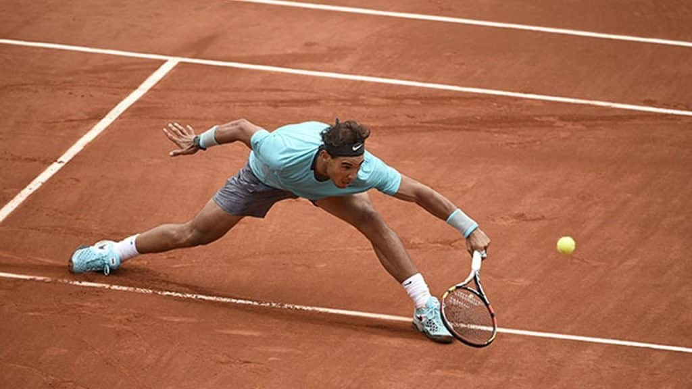

Types of Tennis Shots
Forehand
This is the easiest and probably the first shot learned. The forehand is made by swinging the tennis racket across the body on the same side as the main hand which the racket is held. Most tennis players use a single hand to grip the racquet for the forehand, but some players use a two handed grip. Different players like to use different styles of grips when executing the forehand. Some popular forehand grips include the Western, the Eastern, and the Continental.

Click the image to learn this shot.
Backhand
As the name implies this is the opposite of the forehand, it is made by swinging the racket away from the body on the opposite side to the strong hand. Many players use a single hand to execute the backhand, but there are also many players that use a two-handed backhand.

Click the image to learn this shot.
Serve
This a shot tennis players have no option to master, they have to be able to produce a serve to commence a point. The serve is hit from behind the baseline and on one side of the court into the service box diagonally from the server. The tennis player usually throws the ball in the air and hits the ball at it’s peak height in order to get the best angle possible. Many professional players can hit serves well over 100mph that are nearly impossible to return. When a serve is hit that the opposing player cannot hit, this is called an ace.
Click the image to learn this shot.
Volley
The volley is an aggressive shot that is normally produced to force the opponent back or to win a point. The shot is performed before the ball bounces and the idea is to return the ball before the opponent has time to adjust. The classic players master serve and volley, where a player will charge to the net and then volley the ball quickly back at their opponent. Another type of volley is the half volley where the ball is hit on the rise after the ball bounces.
Click the image to learn this shot.
The Lob
A shot that is a little harder to master as it depends on skill and quite a high degree of technique. The lob is a very high shot, it is usually played hit for two reasons. Firstly to hit the tennis ball just out of reach of an opponent that is at the net and secondly as a defensive measure to gain time to get back into position on the tennis court.
Click the image to learn this shot.
Drop Shot
The first trick shot we have encountered. Drop shot is used when the opponent is at the rear of the court or out of position. The tennis ball is hit softly and just over the net to try and get it to bounce twice before the opponent can reach the ball. These are the basic shots a player will regularly use in a game, there are many variations and other trick shots that can be adapted into a player’s overall game.
Click the image to learn this shot.